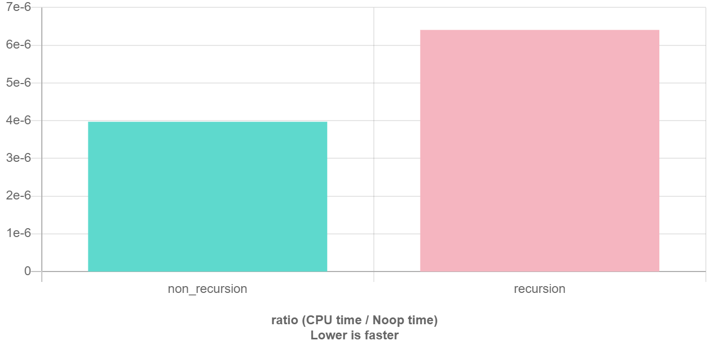

Divide and conquer
本页面将介绍递归与分治算法的区别与结合运用。
简介¶
递归（英语：Recursion），在数学和计算机科学中是指在函数的定义中使用函数自身的方法，在计算机科学中还额外指一种通过重复将问题分解为同类的子问题而解决问题的方法。
分治（英语：Divide and Conquer），字面上的解释是“分而治之”，就是把一个复杂的问题分成两个或更多的相同或相似的子问题，直到最后子问题可以简单的直接求解，原问题的解即子问题的解的合并。
详细介绍¶
递归¶
要理解递归，就得先理解什么是递归。
递归的基本思想是某个函数直接或者间接地调用自身，这样原问题的求解就转换为了许多性质相同但是规模更小的子问题。求解时只需要关注如何把原问题划分成符合条件的子问题，而不需要过分关注这个子问题是如何被解决的。
以下是一些有助于理解递归的例子：
- 什么是递归？
- 如何给一堆数字排序？答：分成两半，先排左半边再排右半边，最后合并就行了，至于怎么排左边和右边，请重新阅读这句话。
- 你今年几岁？答：去年的岁数加一岁，1999 年我出生。

递归在数学中非常常见。例如，集合论对自然数的正式定义是：1 是一个自然数，每个自然数都有一个后继，这一个后继也是自然数。
递归代码最重要的两个特征：结束条件和自我调用。自我调用是在解决子问题，而结束条件定义了最简子问题的答案。
1 2 3 4 | |
为什么要写递归¶
-
结构清晰，可读性强。例如，分别用不同的方法实现 归并排序：
1 2 3 4 5 6 7 8 9 10 11 12 13 14 15 16 17 18 19
// C++ Version // 不使用递归的归并排序算法 template <typename T> void merge_sort(vector<T> a) { int n = a.size(); for (int seg = 1; seg < n; seg = seg + seg) for (int start = 0; start < n - seg; start += seg + seg) merge(a, start, start + seg - 1, std::min(start + seg + seg - 1, n - 1)); } // 使用递归的归并排序算法 template <typename T> void merge_sort(vector<T> a, int front, int end) { if (front >= end) return; int mid = front + (end - front) / 2; merge_sort(a, front, mid); merge_sort(a, mid + 1, end); merge(a, front, mid, end); }1 2 3 4 5 6 7 8 9 10 11 12 13 14 15 16 17 18 19
# Python Version #不使用递归的归并排序算法 def merge_sort(a): n = len(a) seg, start = 1, 0 while seg < n: while start < n - seg: merge(a, start, start + seg - 1, min(start + seg + seg - 1, n - 1)) start = start + seg + seg seg = seg + seg #使用递归的归并排序算法 def merge_sort(a, front, end): if front >= end: return mid = front + (end - front) / 2 merge_sort(a, front, mid) merge_sort(a, mid + 1, end) merge(a, front, mid, end)显然，递归版本比非递归版本更易理解。递归版本的做法一目了然：把左半边排序，把右半边排序，最后合并两边。而非递归版本看起来不知所云，充斥着各种难以理解的边界计算细节，特别容易出 bug，且难以调试。
-
练习分析问题的结构。当发现问题可以被分解成相同结构的小问题时，递归写多了就能敏锐发现这个特点，进而高效解决问题。
递归的缺点¶
在程序执行中，递归是利用堆栈来实现的。每当进入一个函数调用，栈就会增加一层栈帧，每次函数返回，栈就会减少一层栈帧。而栈不是无限大的，当递归层数过多时，就会造成 栈溢出 的后果。
显然有时候递归处理是高效的，比如归并排序；有时候是低效的，比如数孙悟空身上的毛，因为堆栈会消耗额外空间，而简单的递推不会消耗空间。比如这个例子，给一个链表头，计算它的长度：
1 2 3 4 5 6 7 8 9 10 11 12 | |

递归优化¶
比较初级的递归实现可能递归次数太多，容易超时。这时需要对递归进行优化。1
分治算法¶
分治算法的核心思想就是“分而治之”。
大概的流程可以分为三步：分解 -> 解决 -> 合并。
- 分解原问题为结构相同的子问题。
- 分解到某个容易求解的边界之后，进行递归求解。
- 将子问题的解合并成原问题的解。
分治法能解决的问题一般有如下特征：
- 该问题的规模缩小到一定的程度就可以容易地解决。
- 该问题可以分解为若干个规模较小的相同问题，即该问题具有最优子结构性质，利用该问题分解出的子问题的解可以合并为该问题的解。
- 该问题所分解出的各个子问题是相互独立的，即子问题之间不包含公共的子问题。
注意
如果各子问题是不独立的，则分治法要重复地解公共的子问题，也就做了许多不必要的工作。此时虽然也可用分治法，但一般用 动态规划 较好。
以归并排序为例。假设实现归并排序的函数名为 merge_sort。明确该函数的职责，即 对传入的一个数组排序。这个问题显然可以分解。给一个数组排序等于给该数组的左右两半分别排序，然后合并成一个数组。
1 2 3 4 5 6 | |
传给它半个数组，那么处理完后这半个数组就已经被排好了。注意到，merge_sort 与二叉树的后序遍历模板极其相似。因为分治算法的套路是 分解 -> 解决（触底）-> 合并（回溯），先左右分解，再处理合并，回溯就是在退栈，即相当于后序遍历。
merge 函数的实现方式与两个有序链表的合并一致。
要点¶
写递归的要点¶
明白一个函数的作用并相信它能完成这个任务，千万不要跳进这个函数里面企图探究更多细节， 否则就会陷入无穷的细节无法自拔，人脑能压几个栈啊。
以遍历二叉树为例。
1 2 3 4 5 | |
这几行代码就足以遍历任何一棵二叉树了。对于递归函数 traverse(root)，只要相信给它一个根节点 root，它就能遍历这棵树。所以只需要把这个节点的左右节点再传给这个函数就行了。
同样扩展到遍历一棵 N 叉树。与二叉树的写法一模一样。不过，对于 N 叉树，显然没有中序遍历。
1 2 3 4 | |
区别¶
递归与枚举的区别¶
递归和枚举的区别在于：枚举是横向地把问题划分，然后依次求解子问题；而递归是把问题逐级分解，是纵向的拆分。
递归与分治的区别¶
递归是一种编程技巧，一种解决问题的思维方式；分治算法很大程度上是基于递归的，解决更具体问题的算法思想。
例题详解¶
437. 路径总和 III
给定一个二叉树，它的每个结点都存放着一个整数值。
找出路径和等于给定数值的路径总数。
路径不需要从根节点开始，也不需要在叶子节点结束，但是路径方向必须是向下的（只能从父节点到子节点）。
二叉树不超过 1000 个节点，且节点数值范围是[-1000000,1000000]的整数。
示例：
1 2 3 4 5 6 7 8 9 10 11 12 13 14 15 | |
1 2 3 4 5 6 7 8 9 | |
参考代码
1 2 3 4 5 6 7 8 9 10 11 | |
题目解析
题目看起来很复杂，不过代码却极其简洁。
首先明确，递归求解树的问题必然是要遍历整棵树的，所以二叉树的遍历框架（分别对左右子树递归调用函数本身）必然要出现在主函数 pathSum 中。那么对于每个节点，它们应该干什么呢？它们应该看看，自己和它们的子树包含多少条符合条件的路径。好了，这道题就结束了。
按照前面说的技巧，根据刚才的分析来定义清楚每个递归函数应该做的事：
PathSum 函数：给定一个节点和一个目标值，返回以这个节点为根的树中，和为目标值的路径总数。
count 函数：给定一个节点和一个目标值，返回以这个节点为根的树中，能凑出几个以该节点为路径开头，和为目标值的路径总数。
参考代码（附注释）
1 2 3 4 5 6 7 8 9 10 11 12 13 14 15 16 17 18 19 | |
还是那句话，明白每个函数能做的事，并相信它们能够完成。
总结下，PathSum 函数提供了二叉树遍历框架，在遍历中对每个节点调用 count 函数（这里用的是先序遍历，不过中序遍历和后序遍历也可以）。count 函数也是一个二叉树遍历，用于寻找以该节点开头的目标值路径。
习题¶
参考资料与注释¶
build本页面最近更新：，更新历史
edit发现错误？想一起完善？ 在 GitHub 上编辑此页！
people本页面贡献者：fudonglai, AngelKitty, labuladong
copyright本页面的全部内容在 CC BY-SA 4.0 和 SATA 协议之条款下提供，附加条款亦可能应用